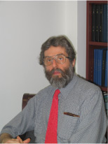

Personnel
The Principal Investigators of CAMRA and Some Highlights of Their Expertise
Many of the investigators in CAMRA have previously worked together and published together in various fields of microbiology, environmental ecology, risk assessment and disease transmission.
Quicklinks to Primary Investigators |
-
 Dr.
Rose, co-director (MSU) has worked with Dr. Haas since 1988
and is a co-editor along with Dr. Haas of the only book on MRA, Quantitative
Microbial Risk Assessment, (John Wiley and Sons, NY, NY, 1999).
She has been involved with integrated microbial risk assessment models
with Drs. Casman and Small and has worked with Dr. Gerba on MRA as
well as on methods and transport assessment for bacteria, parasites
and viruses. She has been involved with EPA and development of the
methods and data for support of various rule making including the Enhanced Surface Water Treatment Rule. Her recent collaborations
have examined zoonotic pathogens with Dr. Carole Bolin and Biochip
development with Dr. Syed Hashsham.
Dr.
Rose, co-director (MSU) has worked with Dr. Haas since 1988
and is a co-editor along with Dr. Haas of the only book on MRA, Quantitative
Microbial Risk Assessment, (John Wiley and Sons, NY, NY, 1999).
She has been involved with integrated microbial risk assessment models
with Drs. Casman and Small and has worked with Dr. Gerba on MRA as
well as on methods and transport assessment for bacteria, parasites
and viruses. She has been involved with EPA and development of the
methods and data for support of various rule making including the Enhanced Surface Water Treatment Rule. Her recent collaborations
have examined zoonotic pathogens with Dr. Carole Bolin and Biochip
development with Dr. Syed Hashsham..
-
Dr. Haas, co-director (Drexel) was one of the first scientists to examine dose-response data sets for microbial agents spread through environmental means and implement a quantitative risk framework following the NAS. He was the primary editor behind the book on Quantitative Microbial Risk Assessment. He has interacted with EPA in regard to disinfection and rules for development of the Surface Water Treatment Rule. He has examined outbreak data, inhalation, ingestion and contact exposures. He has recently published on dose-response modeling for anthrax. Dr. Haas has been a member of several National Research Council committees dealing with bioterrorism. He served on a panel to review the EPA research strategy for homeland security protection of water and wastewater infrastructure He is currently serving on a committee to define :"how clean is safe" following clean up from a bioterrorist event.
.
-
Dr. Bolin is doctor of veterinary medicine. She has worked specifically with select agents and studied zoonotic disease transmission for over a decade. She has examined emerging zoonosis and patterns of infection and the external conditions involved with the spread of disease amongst different animal populations. She has collaborated with Dr. Rose on the subject of waterborne zoonoses.
-
Dr. Casman (CMU) is the Co-PI for current NSF project: "Integrating Risk Analysis and Risk Communication" section on Pneumonic/Bubonic Plague. She has developed an integrated risk model for cryptosporidiosis outbreaks and (with others) a bounding analysis technique for supplementing risk assessment. She is the PI on a CDC project: The Potential of Next-Generation Microbiological Diagnostics to Improve Bioterrorism Detection Speed; and a Co-I of a MacArthur Fund grant to study bioattacks, detection, and response She is involved in an NSF project on SENSORS: Placement and Operation of an Environmental Sensor Network to Facilitate Decision Making Regarding Drinking Water Quality and Security.
-
Dr. Choi has placed a primary research emphasis on fundamentals in transport phenomena and environmental and biological engineering applications. He has been involved in the development of risk models for the contamination of produce by irrigation of water contaminated with pathogens. He has also studied the survival of pathogens in soil, water, on produce and biosolids. Dr. Choi's current research interests include (i) the fate of microorganisms in water distribution systems, (ii) computational fluid dynamics and numerical simulation of transport phenomena, and (iii) the dispersion of biological agents in water systems and development of prediction models using artificial neural network.
-
Dr. Eisenberg (UM) is an expert in the area of microbial risks and study of disease transmission models for water. He has collaborated with Drs. Rose Haas and Dr. Koopman in the past, in addition to being involved with the scientists from University of California-Berkely and the University of Michigan. His current research interests include the epidemiology of waterborne pathogens and malaria. He has been involved in examining impacts and approaches for controls for environmentally transmitted agents and serves as an advisor to both the national and international communities of public health professionals.
-
Dr. Gerba (UA) is well known for his research on virus transport in water. He has been involved in survival and transport studies; point-of-use (POU) disinfection, prototype devices for UV disinfection. He has been involved in methods development and assessment for microbial detection in water and quantifying dispersion of biological agents in biosolid aerosols and domestic environments. He is PI of the Environmental Dispersion of Biological Agents in Sewer systems study for DARPA and the Alternatives for chlorine disinfection of water supplies study for the Dept. of Homeland Security SARPA He is also studying the dispersion of spores in drinking water distribution systems.
-
Dr. Gurian (Drexel) has developed integrated model of exposure, risk, and impacts of alternative regulatory options for multiple drinking water contaminants and is Co-PI of an NSF-sponsored study of risk management for extreme events affecting the U.S.-Mexico border-crossing infrastructure. He is currently involved in two studies of the public perception of technological risks, one addressing the perceived risk of wastewater reuse and one addressing the perceived risk of carbon monoxide poisoning, and a third study concerning Bayesian hierarchical modeling of the occurrence of contaminants in drinking water.
-
Dr. Hashsham (MSU) is a civil and environmental engineer who specializes in the development of bio-molecular tools for the assessment of environmental contamination. He has been awarded an NIH grant to address validation experimentation of a biochip for Class A agents and is the Co-investigator on a project for the development of a biochip for water funded by EPA. He has been collaborating with the Center for Food Safety and Toxicology on the characterization of enteric bacteria and has established research program with Dr. Rose in water. He is an expert on the design and validation of molecular tools including microarray technology.
-
Dr. Keim (NAU) is a geneticist and a forensic ecologist. He has used molecular methods in investigating plague population genetic structure, characteristics of Francisella tularensis, and the molecular epidemiology of anthrax, particularly the 1993 incident in Kameido, Tokyo. He has begun some collaborative efforts with Dr. Gerba.
-
Dr. Koopman (UM) is an infectious disease expert who has worked in the medical arena on pediatric disease such as the spread of rotavirus in developing and developed countries. In the last decade he has built a program on using mathematical and statistical approaches to the study and description of epidemiology. He has worked directly with EPA on population modeling and has address a number of select A agents. He has collaborated previously with Dr. Eisenberg, Dr. Haas and Dr. Rose.
-
Dr. Nicas (UCB) is an industrial hygienist working with aerosols in particular. He develops mathematical models of contaminant emission and dispersion in air and probability models of airborne infectious disease transmission. Based on risk analysis, he has evaluated respiratory protection against airborne pathogens used for bioterrorism. He has collaborated with Dr. Eisenberg and other scientists at the University of California, Berkeley.
-
Dr. Small (CMU) is a member of EPA SAB, Environmental Modeling Committee; FIFRA SAP; EPA BOSC (1996-2002). He is an elected Fellow of Society for Risk Analysis (SRA); Associated Editor of Environmental Science & Technology; Co-Editor of:McDaniels and Small. 2004. Risk Analysis and Society: An Interdisciplinary Characterization of the Field. Cambridge University Press, Cambridge, UK. Co-PI for current NSF project: SENSORS: Placement and Operation of an Environmental Sensor Network to Facilitate Decision Making Regarding Drinking Water Quality and Security. Co-author of: Ramaswami, Milford, and Small. Integrated Environmental Modeling: Pollutant Transport, Fate, and Risk in the Environment, Wiley, in press.
-
Dr. Todd (MSU) is the Director of the National Food Safety and Toxicology Center, where he coordinates research in microbiology, toxicology, epidemiology, risk assessment and social science in the area of food safety, distance education programs, and outreach in the community. Dr. Rose, Gerba and Haas first met Dr. Todd while he worked in the Health Products and Food Branch, Health Canada, Ottawa where he was active in assessment of foodborne disease and instituted an MRA program. He is currently Chair of the Food and Water Specialty group in the Society for Risk Analysis.
-
 Dr. Weber (Drexel) specializes in studying the design and implementation of computational intelligence methods (e.g., Case-Based Reasoning, Fuzzy Set Theory, Information Extraction, Machine Learning) to solve knowledge management problems in a wide variety of domains (e.g., Law, Military, Nutrition, Medical, Finance). From 99-01, she worked with the Navy Center for Applied Research in Artificial Intelligence (NCARAI) in the Naval Research Laboratory (in Washington, DC) funded by ONR grants, where she developed knowledge-based methods for improving the efficacy of repository-based knowledge management systems, such as the Navy Lessons-learned System. Since 2007, she is an Associate Professor and Director of Undergraduate Programs at the iSchool at Drexel University, where she teaches courses related to Computational Intelligence and Knowledge Management.
Dr. Weber (Drexel) specializes in studying the design and implementation of computational intelligence methods (e.g., Case-Based Reasoning, Fuzzy Set Theory, Information Extraction, Machine Learning) to solve knowledge management problems in a wide variety of domains (e.g., Law, Military, Nutrition, Medical, Finance). From 99-01, she worked with the Navy Center for Applied Research in Artificial Intelligence (NCARAI) in the Naval Research Laboratory (in Washington, DC) funded by ONR grants, where she developed knowledge-based methods for improving the efficacy of repository-based knowledge management systems, such as the Navy Lessons-learned System. Since 2007, she is an Associate Professor and Director of Undergraduate Programs at the iSchool at Drexel University, where she teaches courses related to Computational Intelligence and Knowledge Management.